Что такое потеря упругости кожи?
Потеря упругости кожи — это состояние, при котором кожа теряет эластичность и тонус. Она становится дряблой, более сухой и чувствительной к внешним воздействиям, таким как перепады температуры, сухой воздух и агрессивная косметика. В результате проявляются морщины, провисание и ощущение стянутости.
Часто потеря упругости сопровождается появлением мелких морщин, снижением естественного сияния и уплощением контуров лица. В климате Молдовы дряблость кожи может усиливаться зимой из-за холодного ветра и отопления в помещениях.
Важно понимать, что такая кожа требует деликатного ухода. Агрессивные очищающие средства, скрабы или косметика с сильными ароматизаторами могут ускорять старение и ухудшать эластичность кожи.
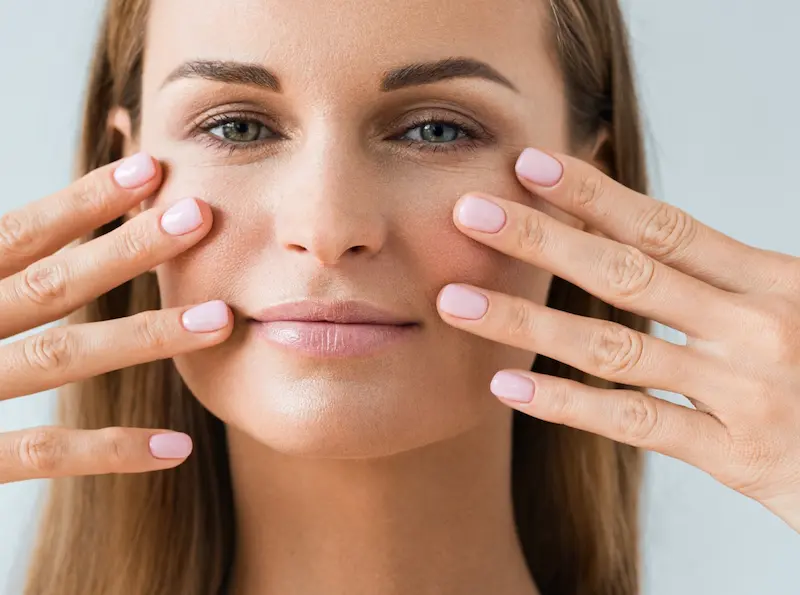
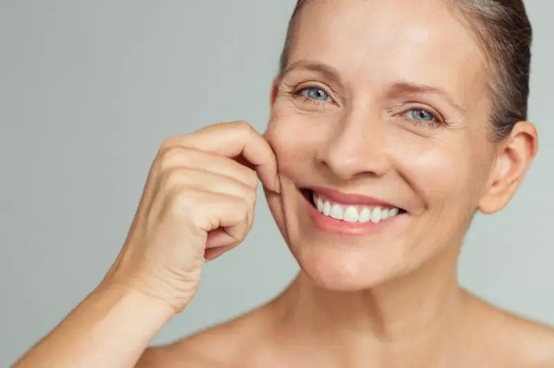
Почему кожа теряет упругость: основные факторы
Главная причина дряблости кожи — снижение выработки коллагена и эластина, которые отвечают за упругость и тонус. С возрастом кожа теряет способность удерживать влагу, становится более сухой и склонной к провисанию.
Среди внешних факторов: ультрафиолетовое излучение, стресс, неправильное питание, курение, недостаток сна и агрессивные косметические средства. Эти воздействия ускоряют разрушение коллагена и эластина, ухудшая эластичность кожи.
В условиях городского климата Кишинёва дряблость кожи могут усиливать загрязнение воздуха, перепады температуры и сухой воздух в помещениях. Эти факторы снижают естественный тонус кожи и способствуют преждевременному старению.
Основные правила ухода за кожей для сохранения упругости
Полезные ингредиенты для упругости кожи
| Ингредиент | Действие для кожи при потере упругости |
|---|---|
| Коллаген | Поддерживает структуру кожи, укрепляет её и способствует восстановлению упругости, снижая дряблость. |
| Пептиды | Стимулируют синтез коллагена и эластина, повышая тонус кожи и уменьшая морщины. |
| Гиалуроновая кислота | Интенсивно увлажняет кожу, удерживает влагу и делает её более эластичной и мягкой. |
| Антиоксиданты (витамины C, E, сквалан) | Защищают кожу от повреждений свободными радикалами, поддерживают эластичность и тонус кожи. |
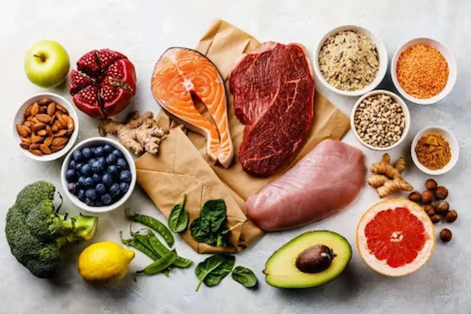
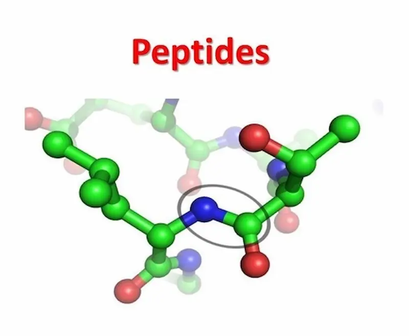
Ошибки, которые могут ускорить потерю упругости кожи
Как поддерживать упругость кожи
Уход должен быть направлен на восстановление тонуса, поддержание гидратации и укрепление структуры кожи. Правильно подобранные средства помогают уменьшить дряблость, сгладить морщины и сделать кожу более эластичной.
Основу ухода составляют деликатное очищение, регулярное увлажнение и использование средств с коллагеном, пептидами, гиалуроновой кислотой и антиоксидантами. В условиях климата Молдовы особенно важно защищать кожу зимой от холодного ветра и сухого воздуха, а летом — от обезвоживания и ультрафиолетового излучения.
Протокол ухода за кожей при потере упругости: Утро vs Вечер
Для поддержания тонуса и эластичности кожи важно разделить рутину на две фазы: увлажнение и защита днем и восстановление и питание вечером.
| Время суток | Этап ухода | Почему это важно? |
|---|---|---|
| Утро | Лёгкий увлажняющий крем + SPF 30–50 | Защищает кожу от UV-лучей и внешних раздражителей, предотвращает обезвоживание и появление морщин. |
| Вечер | Крем с коллагеном, пептидами и гиалуроновой кислотой | Восстанавливает эластичность, поддерживает упругость кожи после дня и предотвращает дряблость. |
| Уход (ежедневно) | Сыворотки с антиоксидантами, масла для упругости кожи | Укрепляют гидролипидный баланс, повышают тонус и эластичность кожи. |
| SOS-уход | Маски и бальзамы с коллагеном и пептидами | Интенсивное восстановление при сильной дряблости и потере упругости. |
Совет для Молдовы: В зимний период используйте увлажняющие кремы с защитой от ветра и отопления, летом — продукты с SPF и антиоксидантами для предотвращения обезвоживания и фотостарения.
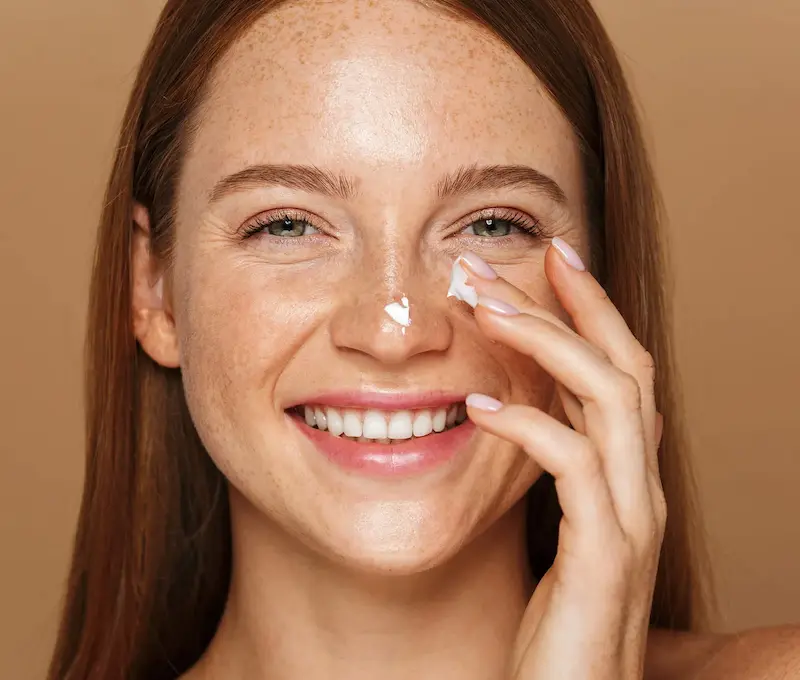
Влияние городской среды на упругость кожи
В городах Молдовы сочетание пыли, смога, УФ-излучения и сухого воздуха снижает эластичность кожи и ускоряет появление морщин. Загрязнения оседают на коже, вызывают микровоспаления и уменьшают тонус.
Вечерний уход особенно важен: мягкое гидрофильное масло или очищающий бальзам + сыворотка с антиоксидантами и пептидами помогают восстановить упругость, укрепить структуру кожи и снизить последствия дневных нагрузок.
Симптомы потери упругости кожи
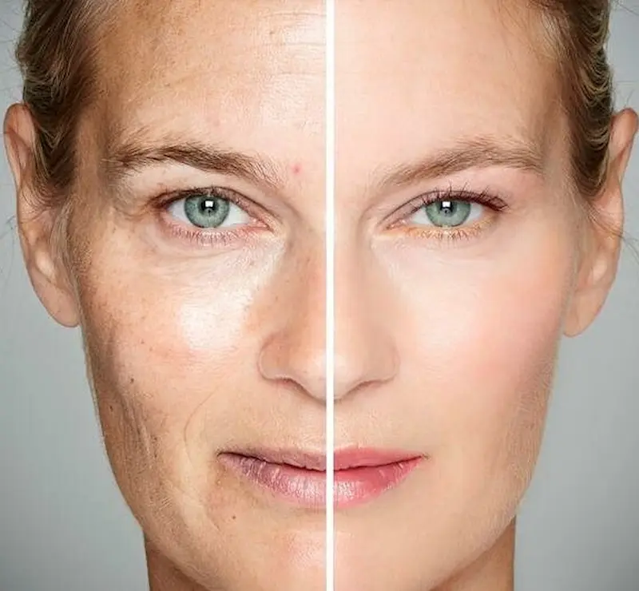
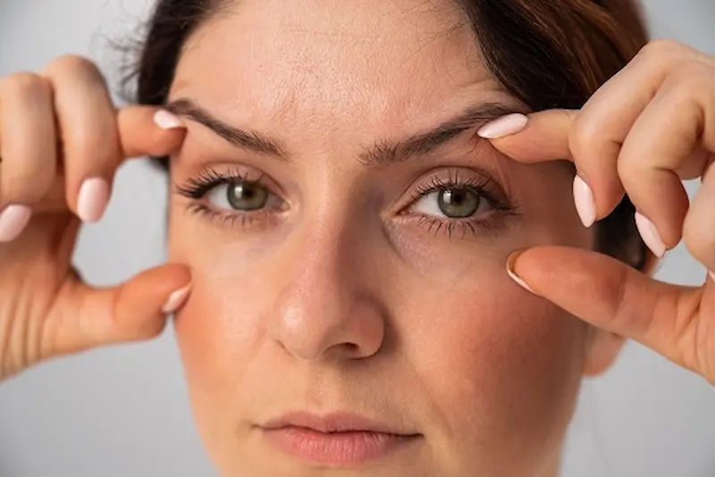
Факторы, ускоряющие потерю упругости кожи
Топ средств для повышения упругости кожи
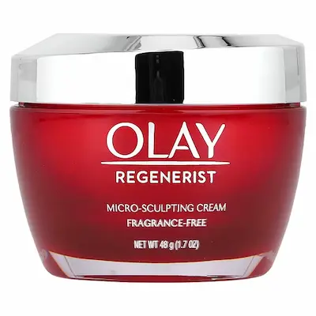
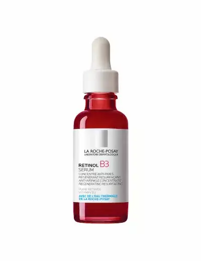
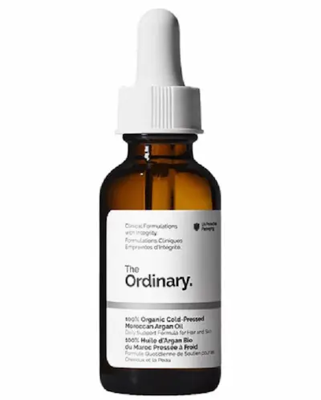
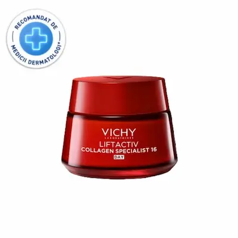
Основные принципы профилактики потери упругости кожи
Чтобы замедлить дряблость кожи, важно соблюдать регулярный уход: мягкое очищение, интенсивное увлажнение, защита от солнца и поддержание структуры кожи. Используйте средства с коллагеном, пептидами, гиалуроновой кислотой и антиоксидантами.
Также полезно вести дневник ухода: отмечать, какие факторы ускоряют потерю упругости, и корректировать рутину и образ жизни в соответствии с результатами наблюдений. Правильное питание, достаточное потребление воды и защита кожи зимой и летом помогают поддерживать её тонус и эластичность.
Часто задаваемые вопросы о потере упругости кожи
Почему кожа теряет упругость?
Основные причины — снижение выработки коллагена и эластина с возрастом, воздействие ультрафиолета, обезвоживание, стресс и вредные привычки. Кожа становится менее плотной, появляются морщины и провисание.
С какого возраста начинается потеря упругости?
Первые признаки могут появляться уже после 25 лет, когда замедляется синтез коллагена. Более выраженные изменения обычно заметны после 30–35 лет.
Как вернуть коже упругость?
Важно сочетать правильный уход и образ жизни: использовать средства с пептидами, ретинолом, антиоксидантами, регулярно увлажнять кожу и защищать её от солнца с помощью SPF.
Какие ингредиенты помогают повысить упругость кожи?
Эффективны пептиды, ретинол, витамин C, ниацинамид и гиалуроновая кислота. Они стимулируют выработку коллагена, улучшают текстуру кожи и повышают её плотность.
Можно ли улучшить упругость кожи только кремами?
Кремы помогают значительно улучшить состояние кожи, но максимальный эффект достигается при комплексном подходе: питание, сон, защита от солнца и профессиональные процедуры при необходимости.
Какие ошибки ускоряют потерю упругости?
Частые ошибки — отсутствие SPF, недостаточное увлажнение, курение, агрессивный уход и игнорирование первых признаков старения кожи.
Как климат Молдовы влияет на упругость кожи?
В Молдове жаркое лето с активным солнцем ускоряет фотостарение, а зимой сухой воздух способствует обезвоживанию кожи. Поэтому важно круглый год использовать SPF и увлажняющие средства.